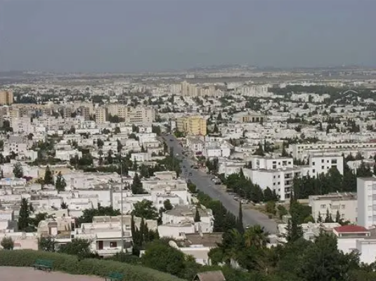
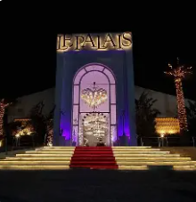
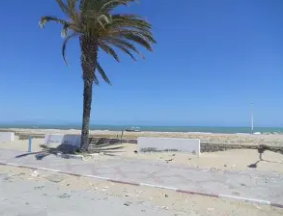
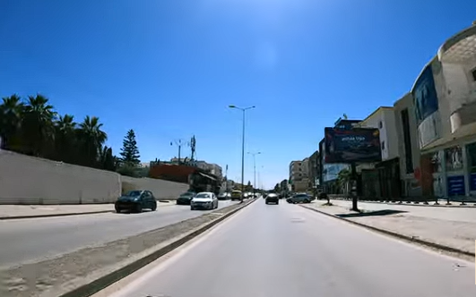

La Cité de la Rose

L'Ariana est un gouvernorat situé au nord de Tunis, formant une partie importante du Grand Tunis. C'est une région résidentielle moderne qui a connu un développement urbain spectaculaire ces dernières décennies.
La ville de l'Ariana, chef-lieu du gouvernorat, est réputée pour ses quartiers résidentiels, ses infrastructures modernes et sa proximité avec l'aéroport international Tunis-Carthage.
Le gouvernorat se distingue par son dynamisme économique, ses centres commerciaux, son habitat moderne et son rôle de zone tampon entre la capitale et les gouvernorats du nord.
Abrite l'aéroport international Tunis-Carthage, principale porte d'entrée aérienne de la Tunisie accueillant des millions de voyageurs chaque année.
Nombreux centres commerciaux modernes comme Carrefour, Géant et Azur City, faisant de l'Ariana un pôle commercial majeur.
Tradition artisanale riche, notamment dans la poterie et la céramique. Le musée du patrimoine de l'Ariana préserve cet héritage.
Quartiers modernes comme La Soukra, Raoued et Ennasr, offrant un cadre de vie agréable et des infrastructures de qualité.

Magnifique palais beylical construit au XIXe siècle par Khereddine Pacha. Il abrite aujourd'hui le musée national de la céramique et présente une architecture hispano-mauresque exceptionnelle.

Ville dynamique et moderne de l'Ariana, connue pour son centre urbain nord qui regroupe commerces, espaces verts et équipements sportifs. Symbole du développement urbain du gouvernorat.

Délégation résidentielle prisée avec ses villas, ses espaces verts et ses infrastructures modernes. Abrite plusieurs établissements d'enseignement et centres sportifs.